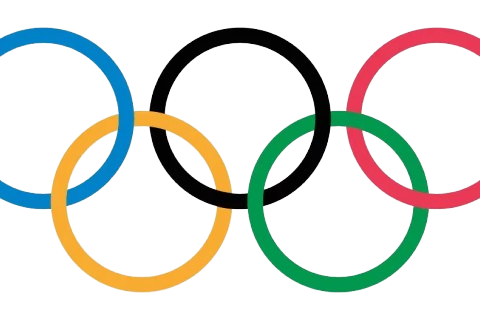
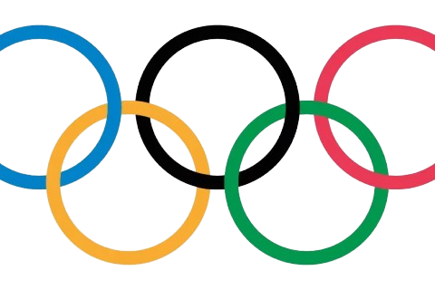

The Olympics is More Than Just Medals


 

The Olympic Games are a global spectacle, a celebration of athleticism, dedication, and human achievement. But beyond the gold medals and world records, there's a story that often goes untold, the mental health journey of athletes.
In recent years, we've seen a growing number of athletes openly discuss their struggles with mental health. From Simone Biles' courageous decision to withdraw from the Tokyo Olympics to Naomi Osaka's powerful advocacy for mental health awareness, these athletes have shown incredible bravery in sharing their experiences.

The Pressure to Perform
The pressure to perform at the highest level can be immense for athletes. The weight of expectations, the fear of failure, and the constant scrutiny can take a toll on their mental well-being.

Breaking the Stigma
By speaking openly about their mental health struggles, these athletes are helping to break down the stigma surrounding mental health issues. They're showing that it's okay to not be okay, and that seeking help is a sign of strength, not weakness.

Let's Celebrate Resilience
The Olympic Games are a testament to human resilience. Athletes overcome countless obstacles, both physical and mental, to achieve their goals.
"I think it's important to listen to your body and your mind, and if something's not right, it's okay to take a break."

"I realised that my mental health directly impacted my performance in the pool."

"When I'm not feeling mentally well, I find it really tough to perform at my best."

"If I'm not taking care of my mental health, it's going to show in my swimming.”

"I've learned that mental health is just as important as physical health when it comes to being a successful athlete."